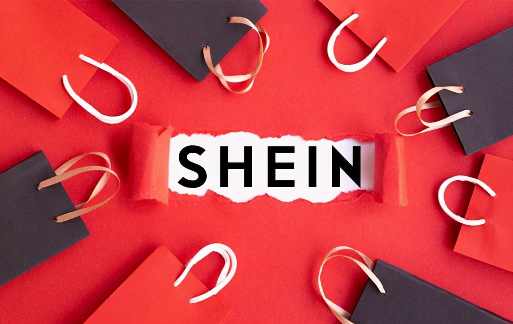
Re-structuring SHEIN's Navigation
for Real People, Not Just Categories
A 10-week group study where we took SHEIN's fast-fashion chaos and shaped it into a calmer, more trustworthy shopping journey — using card sorting, tree testing, heuristics, and wireframes to redesign the navigation from the inside out.
Project Overview
The brief
My Role
UX Researcher & IA Designer
Project Timeline
10 weeks
Methods
Heuristic Analysis · Card Sorting · Tree Testing · Sitemaps · Wireframes
Tools
Miro · FigJam · Figma · Canva · Proven by Users (UX Testing and Research Tool)
SHEIN is a global fast-fashion e-commerce platform that ships to over 200 countries and adds thousands of new items weekly. Its navigation grew alongside its catalog — without a clear structure — leaving users with overlapping categories, vague labels, and no consistent logic for how things are organised.
The project had three goals: restructure the navigation bar to reflect how users actually shop, remove redundant and confusing categories, and improve the onboarding and checkout flows.
Project Timeline — 10 Weeks
Personas
Who we were designing for
We built two personas based on user research to keep design decisions grounded in real behaviour. Emma represents frequent casual shoppers who browse across multiple categories. Dave represents goal-directed shoppers who come in looking for one specific item.
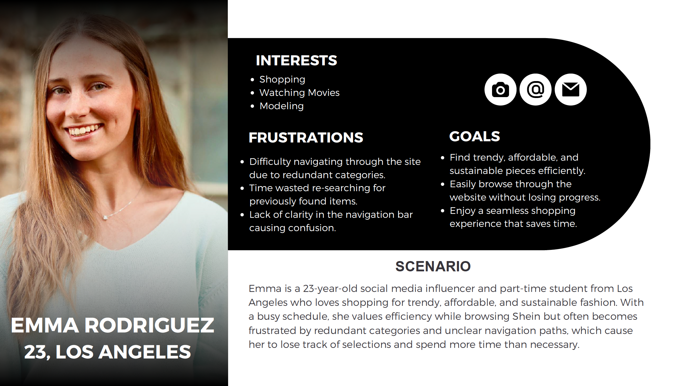
Persona 01 · Emma Rodriguez, 23 · Los Angeles
"Don't make me lose my progress"
Social media influencer & part-time student. Values efficiency — frustrated by redundant categories that cause her to lose track of found items and repeat searches.
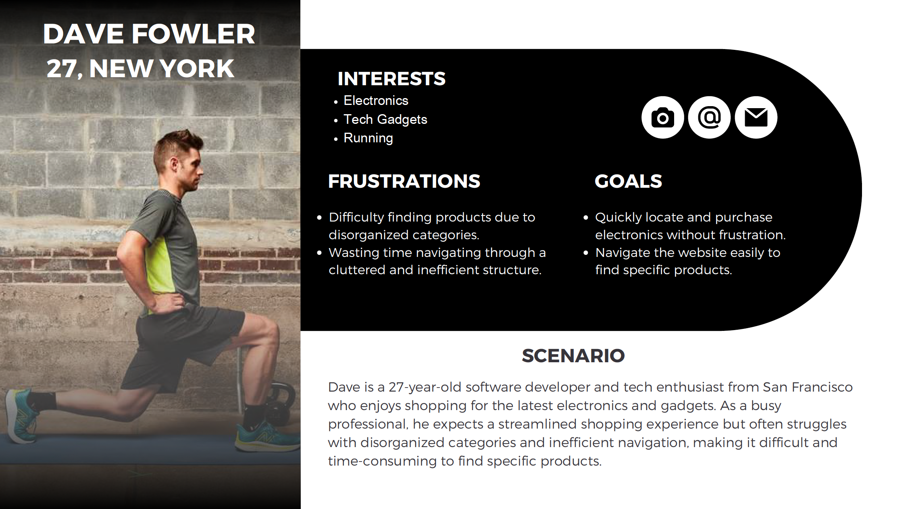
Persona 02 · Dave Fowler, 27 · New York
"I just want the right gadget"
Software developer & tech enthusiast. Expects a streamlined experience but finds SHEIN's cluttered structure actively works against finding specific products.
Methodology
Research approach
We used a multi-method IA research process. Each method built on the previous one: heuristic analysis identified the problem areas, card sorting tested how users mentally organise content, and tree testing validated whether the restructured navigation actually worked.
Heuristic Analysis
Evaluated Log In / Register and Make a Purchase flows against Nielsen's usability heuristics to establish a baseline of friction points before making any structural changes.
Pilot Card Sort — 6 participants, 35 cards, 12 categories
An initial open sort to calibrate our card deck and category language. Revealed the first signals that several of SHEIN's existing labels had no clear home in users' mental models.
Card Sort 1 — 5 participants, 35 cards, 10 categories
Refined the deck and ran a hybrid sort. Broad categories worked — the friction showed up in ambiguous labels and edge cases like "Family Outfits," which 100% of participants couldn't place.
Card Sort 2 — 7 participants, 25 cards, 15 categories
Tightened the deck to focus on contested items. Provided clear signal on Language vs Globe placement and validated the overall category hierarchy we were building toward.
Tree Testing — 7 participants, 4 tasks, contextual inquiry
Stripped away all UI and tested the bare navigation tree. Used contextual inquiry to understand why participants chose certain paths — treating every detour as a design bug, not a user error.
Research — Card Sorting
Card sorting
We ran a hybrid card sort across three rounds — pilot, Sort 1, and Sort 2 — with 18 participants total. Participants were given 25–35 content cards and asked to group them into categories that made sense to them. This told us where SHEIN's existing labels matched users' mental models, and where they didn't.
Card Sort 1 — Finding the obvious and the awkward
High-level categories like Men, Women, Kids, Pets, and Electronics were easy for participants to sort. Problems appeared with sub-categories: "Accessories," "Language," "Globe," and "Account" caused confusion due to overlapping scope. "Family Outfits" was placed in "I don't know where this goes" by 100% of participants — no one could find it a logical home within the existing structure.
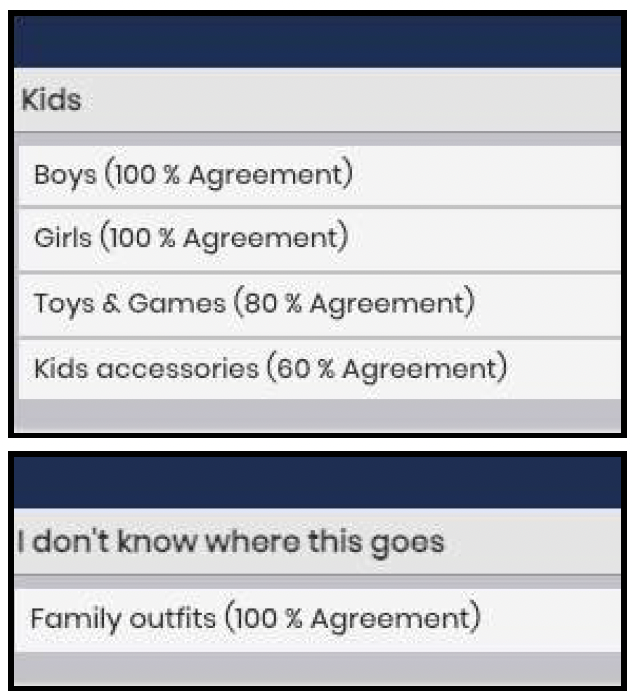
"Family Outfits" had 100% agreement in the confusion pile. That's not a labeling issue — it means the category has no logical parent in the current structure and needs its own space.
Key insight — Card Sort 1Card Sort 2 — Refining labels, testing our instincts
With a refined deck of 25 cards and 15 categories, Sort 2 focused on contested items from the first round. 57.1% of participants placed "Kids Accessories" under "Accessories," confirming the existing decision. More clearly, over 85% placed "Language" under "Account" rather than "Globe" — a strong enough signal to remove the Globe page from the navigation entirely.
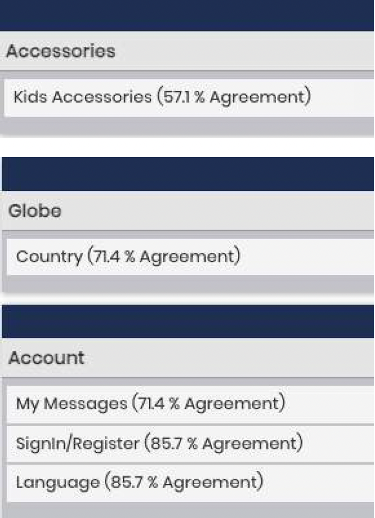
Move Language to Account
Clear consensus across both rounds: language and regional settings belong with account preferences — not a standalone "Globe" section no one could intuitively find.
Family Outfits has no home
Every participant in Card Sort 1 placed "Family Outfits" in the confusion pile. The category was too distinct to live under Kids alone — it needed its own dedicated page.
Research — Tree Testing
Tree testing
Once we had a revised sitemap, we ran a tree test with 7 participants to check whether the new structure was actually findable. We removed all visual UI and presented only the navigation hierarchy as text. Participants were given 4 tasks and asked to navigate to a specific item. We used contextual inquiry alongside the test to capture why participants made certain choices, not just where they ended up.
Task 1 · Account Registration
"If you were to create a new account on SHEIN, where would you navigate?"
4 direct successes, 1 indirect. The 28.6% failure pointed to real label ambiguity between "Sign Up," "Register," and "Log In" — a specific, fixable language problem.
Task 2 · Pet Accessories
"You want to purchase a leash for your pet — which category would you go to?"
5 direct successes, 1 indirect. Strong performance confirming "Accessories" as the right home for pet items. Minor label refinements only.
Task 3 · Phone Case
"You need a phone case and screen protector — which section would you go to?"
5 direct, 2 indirect — all successful. Evidence that some parts of the IA were already working well and didn't need to change. We preserved them.
Task 4 · Home Decor
"With Christmas approaching, you decide to decorate your home — where would you look?"
5 direct successes, 0 indirect. The 28.6% failure was caused by confusion between "Home Decor" and "Home Textiles" — the structure was sound, the language needed to work harder.
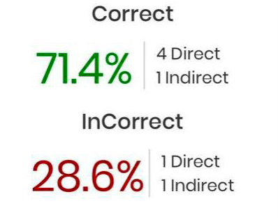
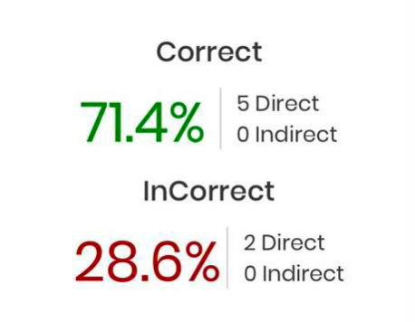
When a participant fails in a stripped-down tree, the problem is in the structure or the label — not the interface. Tree testing isolates that clearly.
Key takeaway — Tree TestingInformation Architecture
Sitemap iterations
We produced three versions of the sitemap over the course of the project. Each version was updated based on findings from the most recent research round. Changes between versions are documented below.
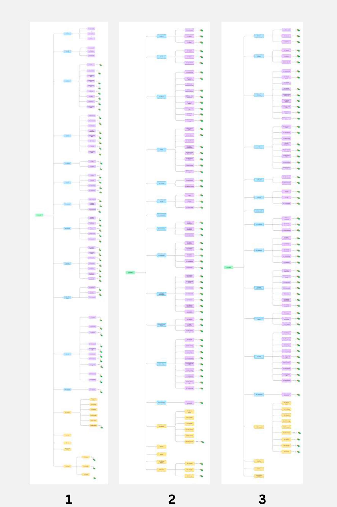
Change 1 — Family Outfits moved to a standalone page
Card Sort 1 showed 100% of participants could not assign "Family Outfits" to any existing category. It was originally nested under Kids. Based on that finding, we removed it from Kids and created a standalone top-level page for it in V2.
Before — V1
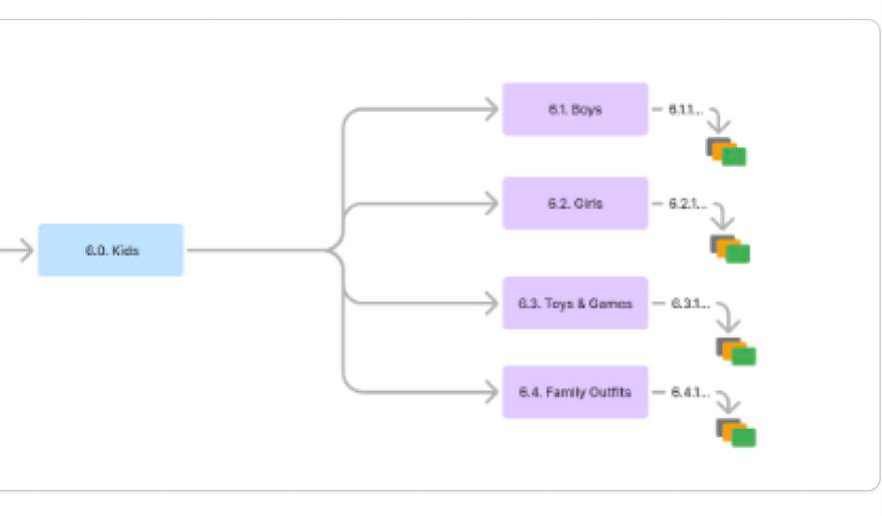
"Family Outfits" nested under Kids — 100% of participants couldn't place it there.
After — V2
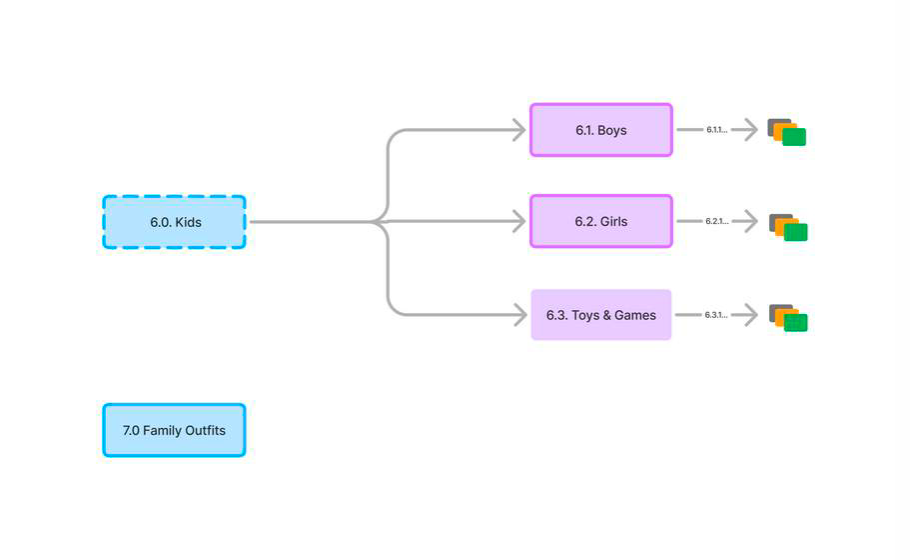
"Family Outfits" promoted to a standalone top-level section (7.0).
Change 2 — Globe page removed, contents moved to Account
Over 85% of Card Sort 2 participants placed "Language" under "Account," not "Globe." We removed the Globe page in V3 and moved Currency, Language, and Country into the Account section to match where users expected to find them.
Before — V2
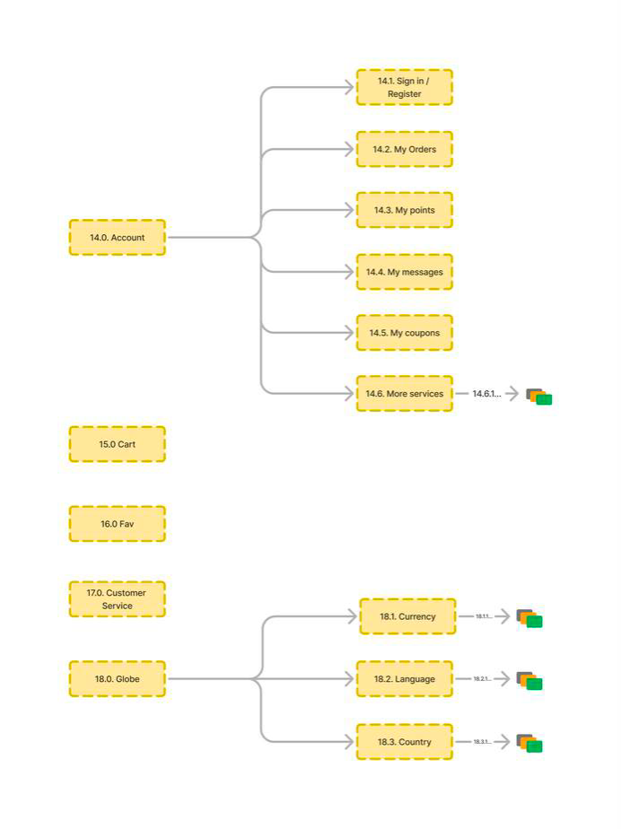
Globe as a standalone section (18.0) — Currency, Language, Country disconnected from Account.
After — V3
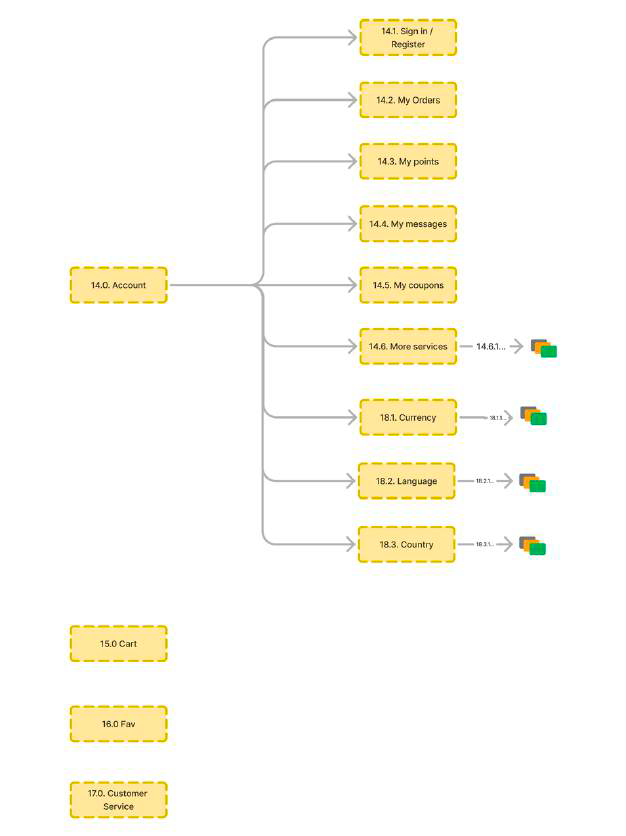
Globe removed — Currency, Language, Country moved into Account (14.0).
Heuristic Analysis
Heuristic evaluation
We evaluated two task flows — Log In / Register and Make a Purchase — against Nielsen's 10 usability heuristics. Each flow was scored on a 1–5 scale across heuristic criteria. This gave us a documented baseline of specific usability problems before we wrote a single wireframe.
Task 1
Log In / Register
Unclear entry points, three label variants used interchangeably ("Sign Up," "Register," "Log In"), and no email/SMS verification step eroded trust at the moment it matters most — first contact with the platform.
Task 2
Make a Purchase
Performed slightly better, but promotional banners during checkout, an overloaded filter bar, and too many required fields created unnecessary friction right at the finish line.
Wireframes
Hi-fidelity wireframes
We designed Hi-fidelity mobile wireframes for both heuristic task flows. The wireframes were informed by the final sitemap and the usability issues identified during heuristic evaluation. The goal was to show a corrected flow, not a polished UI.
Task 1 — Sign In / Register
The flow starts from the Account button, leads to a clear Sign In / Register split, and routes new users through an email or phone entry followed by a 6-digit verification code. Social sign-in via Google or Facebook is available at every step. The emphasis is on trust: fewer surprises, one clear path at a time, and verification built in rather than bolted on.
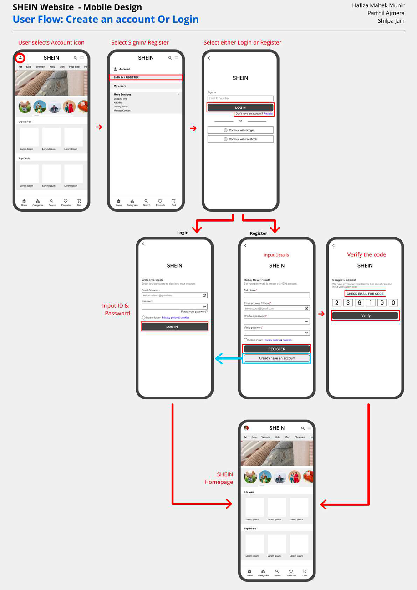
Task 2 — Making a Purchase
The purchase flow begins on the product page: select size, colour, quantity → add to cart → proceed to a lean checkout that asks for essentials only. Post-purchase, users can choose their shipment notification method, view order details, or access a barcode for the mobile app. Promo codes and secondary actions are present but deprioritised.
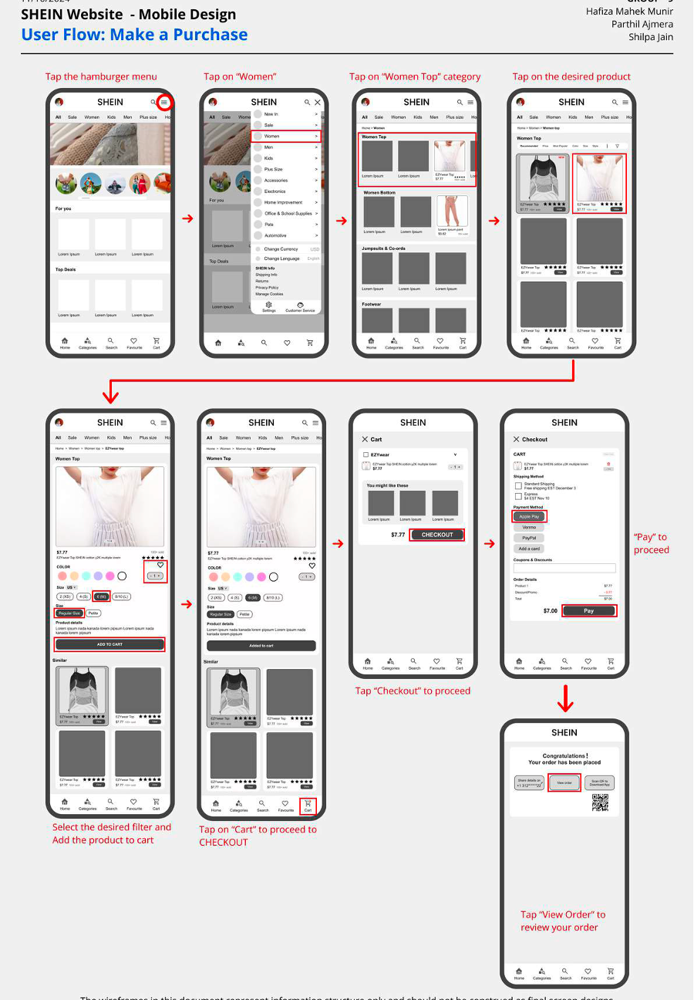
Recommendations
What I'd hand to a product team
We translated research into practical, prioritised recommendations directly traceable to findings — each one connecting a usability pain point to a concrete, implementable fix.
Consistent, Clear Labeling
Standardise "Sign Up / Register / Log In" across all surfaces. Differentiate similar categories like "Home Decor" vs. "Home Textiles" with more descriptive language to eliminate guesswork before it becomes frustration.
Declutter Key Flows
Introduce a "hide promotions" toggle or clean mode so shoppers can complete registration and checkout without banners and pop-ups competing for attention at the moments that require focus and trust.
Refined Filters & Search
Simplify the filter bar to key attributes and add in-filter search. Improve the search algorithm to handle synonyms and misspellings — so what users type and what SHEIN shows align more reliably.
Stronger Verification
Add email/SMS verification for critical actions — account creation, payment changes — with a recoverable "undo" flow for accidental modifications. Security and forgiveness, not just security.
Guest Checkout as First-Class
Surface guest checkout as a prominently visible option, not a footnote. Highlight its benefits (faster, no account required) for first-time visitors who aren't ready to commit to an account.
Curated Content Hierarchy
Add "Trending Now," "Most Popular," and "Staff Picks" sections to help users discover items without wading through thousands of daily additions. Hierarchy, not just volume.
My Role & Reflection
Thinking in systems, not just screens
Throughout this project, I moved between research and structure — always asking, "How will this decision show up in the real shopping experience?" I co-led card sort planning and facilitation, refined the card deck between rounds based on findings, helped design tree test tasks, and interpreted direct vs. indirect paths as structural clues rather than user errors. I contributed to each sitemap iteration and co-created wireframes focused on clarity and trust over aesthetics.
Most importantly, this project reinforced a habit I want to carry into every future IA project: treat navigation as a living system. When thousands of products change every week, IA is not a one-time deliverable — it's an ongoing conversation between user expectations, content growth, and business goals. When 100% of users can't place a category, you move it. No debate needed.
From scattered to structured
Every change in the final sitemap — from retiring the Globe page to giving Family Outfits its own home — was backed by research, not assumption. That's the thing about good IA work: the best decisions feel obvious in hindsight, because they're built on what users were already trying to tell us all along.
Want to see more?
Explore other projects in the portfolio, or get in touch to talk research, collaboration, or anything in between.